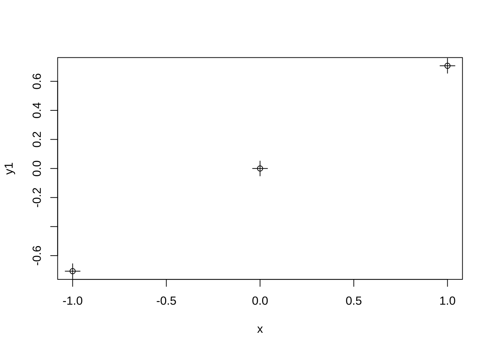
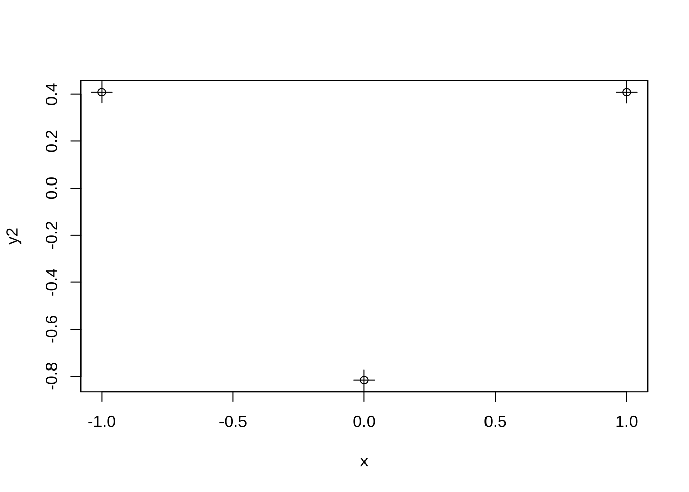

제 2 장 직교하는 대비
2.1 직교하는 대비
다음과 같이 처리그룹의 합으로 표시된 2개의 서로 다른 대비 \(C_1\)과 \(C_2\)를 고려하자.
\[\begin{equation} C_1 = c_1 T_1 + c_2 T_2 + \dots + c_a T_a, \quad \sum_{i=1}^a c_i =0 \tag{2.1} \end{equation}\]
\[\begin{equation} C_2 = d_1 T_1 + d_2 T_2 + \dots + d_a T_a, \quad \sum_{i=1}^a d_i =0 \tag{2.2} \end{equation}\]
서로 다른 두 대비에서 계수들의 내적이 0 이 되는 경우 두 대비가 직교(orthogonal)한다고 말한다.
\[\begin{equation} \sum_{i=1}^a c_i d_i =0 \quad \rightarrow \text{ orthogonal constrast} \tag{2.3} \end{equation}\]
대비가 서로 직교하면 그에 따른 두 제곱합 \(SS_{C_1}\)과 \(SS_{C_2}\)는 서로 독립이다.
\[ SS_{C_1} = \frac{C_1^2}{r\sum_i c_i^2 } \quad \sim_{indep.} \quad SS_{C_2} = \frac{C_2^2}{r\sum_i d_i^2 } \]
따라서 앞 절에서 배운 각 대비에 대한 가설을 검정할 수 있는 F-통계량도 독립이다.
\[ F_1 = \frac{SS_{C_1}}{MSE} \quad \sim_{indep.} \quad F_2 = \frac{SS_{C_2}}{MSE} \]
2.2 처리 제곱합의 분해
만약 요인 \(A\)가 \(a\)개의 수준을 가지면 이 요인에 대한 직교하는 대비를 \(a-1\)개 만들 수 있다.
주의할 점은 직교하는 대비들는 유일하지 않다.
또한 각 대비 \(C_{i}\)에 대한 제곱합은 자유도가 1인 카이제곱 분포를 따르며 서로 독립이다. 더 나아가 분산분석에서 요인 A에 대한 처리제곱합 \(SS_A\)가 다은과 같이 분해된다.
\[ SS_A = SS_{C_1} + SS_{C_2} + SS_{C_3} + \dots + SS_{C_{a-1}} \]
2.3 대표적인 대비
2.3.1 다항 대비
직교하는 대비들 중에 대표적인 예로 다항 대비(polynomial contrasts)가 있다. 다항 대비는 처리 수준의 간격이 일정한 경우 평균의 변화가 선형(linear)인지, 이차적(quadratic)인지, 더 나아가 \(k\)차 다항식의 변화를 가지는지 검정할 수 있다.
다항대비의 계수들은 검정하고자 하는 변화의 추세가 강할 수록 대응하는 제곱합이 크게 되도록 설계되어 있다. 따라서 귀무가설에 대한 p-값이 크면 변화의 추세가 강하게 나타난다고 말할 수 있다.
예를 들어 3개의 수준에서 다음과 같이 2개의 다항 대비를 구할 수 있다. 아래 R 출력에 나오는 행렬의 각 열이 서로 직교하는 대비이다. 대비들의 계수의 제곱의 합이 1이 되도록(\(\sum_i c_i^2=1\)) 정규화한 결과이다.
contr.poly(3)## .L .Q
## [1,] -7.071e-01 0.4082
## [2,] -7.850e-17 -0.8165
## [3,] 7.071e-01 0.4082첫 번째 열이 선형 대비(linear contrast)로 계수는 다음과 같다.
\[ c_1= - \frac{1}{\sqrt{2}}, \quad c_2 =0 \quad c_3= \frac{1}{\sqrt{2}} \]
선형 대비를 그림으로 그려보면 다음과 같다.
x <- c(-1,0,1)
y1 <- contr.poly(3)[,1]
plot(x,y1 )
points(x,y1,cex=2, pch =3)
두 번째 열은 이차 대비(quadratic contrast)로 계수는 다음과 같다.
\[ c_1= \frac{1}{\sqrt{6}}, \quad c_2 = - \frac{2}{\sqrt{6}} \quad c_3= \frac{1}{\sqrt{6}} \] 이차 대비를 그림으로 그려보면 다음과 같다.
y2 <- contr.poly(3)[,2]
plot(x,y2 )
points(x,y2,cex=2, pch =3)
다음과 같이 수준의 개수가 \(5\)인 경우 4차 다항대비를 구해준다. 함수 contr.poly(k)는 \(k-1\)차 다항 대비까지 구해준다.
contr.poly(5)## .L .Q .C ^4
## [1,] -0.6325 0.5345 -3.162e-01 0.1195
## [2,] -0.3162 -0.2673 6.325e-01 -0.4781
## [3,] 0.0000 -0.5345 -4.096e-16 0.7171
## [4,] 0.3162 -0.2673 -6.325e-01 -0.4781
## [5,] 0.6325 0.5345 3.162e-01 0.11952.3.2 교과서 예제 7.1
교과서 예제 7.1 에서 제조회사에 대한 비교를 하는 경우 요인의 개수가 3개이므로 2개의 직교 대비를 이용한다.
예제 7.1 에서 제조회사에 대한 비교를 하는 경우 이용한 대비의 계수는 다음과 같다.
\[ c_1= 1, ~~ c_2=1, ~~ c_3 = -2 \] \[ d_1= 1, ~~d_2=-1, ~~ d_3= 0 \]